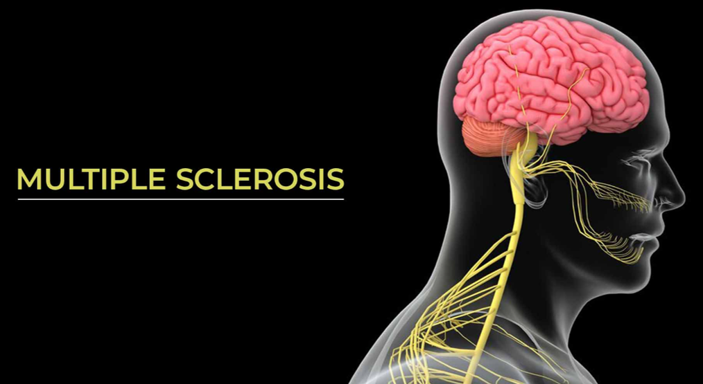
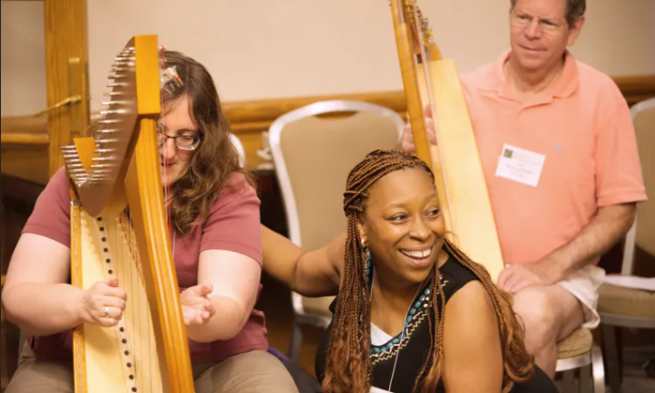
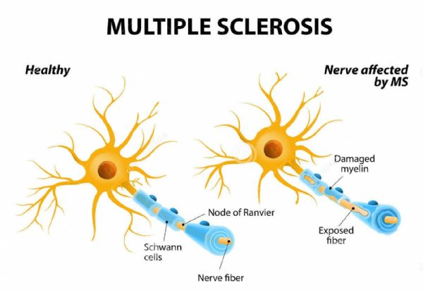
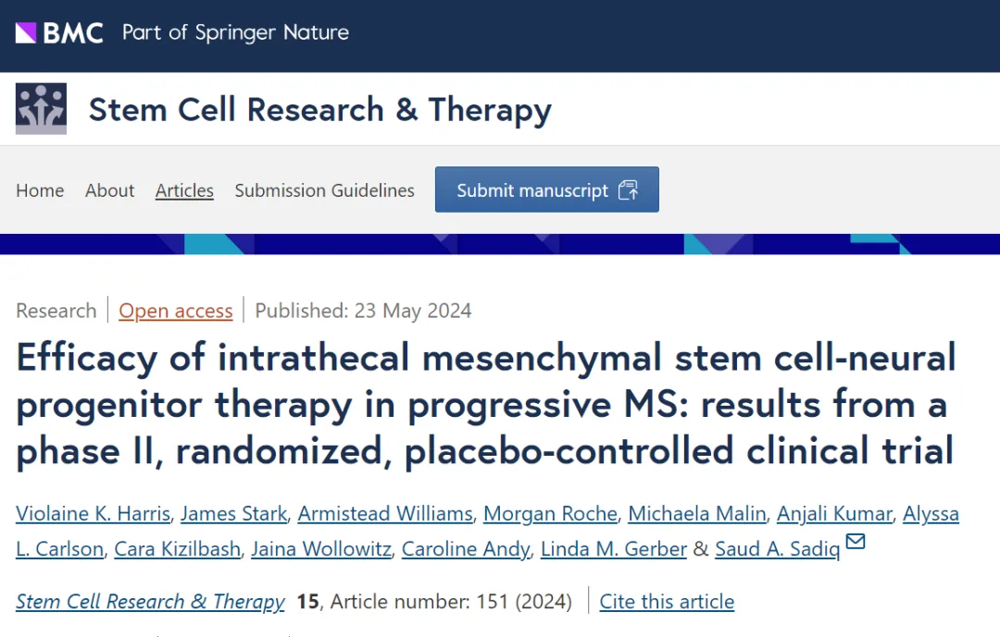

别等身体亮红灯！百年春自体干细胞，为您定制细胞级抗衰防线
2026-03-04

About Us
关于百年春
2024年年5月，全球最大多发性硬化症（MS）研究中心公布了干细胞疗法的二期结果，证实干细胞可改善MS患者多项指标，并能在病情显著恶化后逆转患者的残疾，让整个领域都为之振奋。而作为其中的受试者，罗宾讲述了她所经历的一切，从失去知觉、行走困难到完成竖琴独奏，再次旅行，干细胞让她的生活从黑夜回到了白天
多发性硬化症（Multiple Sclerosis，简称MS）是一种慢性中枢神经系统疾病，影响全球约280万人。

这种疾病的特征是免疫系统误把中枢神经系统当成敌人，攻击保护神经纤维的髓鞘，导致神经信号传递紊乱。MS患者通常会经历视力模糊、肢体麻木、肌肉无力、行动困难等问题，严重者甚至可能完全丧失自理能力。
罗宾·戈登-卡地亚（Robbin Gordon-Cartier）的未来原本是一片坦途。
作为新泽西州东奥兰治学区的竖琴家和教师，也是美国竖琴协会的第二副主席。每个周末，罗宾都会出去演出，环游世界。她还拥有一间私人工作室，在那里，她会教授不同年龄段的孩子学习竖琴。

△罗宾（中）正在教授学生学习竖琴
然而，一切都随着一张诊断书戛然而止，2011年，罗宾被诊断出患有多发性硬化症（MS），这是最常见的青壮年致残性神经系统疾病之一，病患体内“失控”的免疫系统会无差别地攻击中枢神经系统，致使患者视力下降、肢体感觉障碍，共济失调（运动笨拙、不协调、走路步履不稳等）。如未能及时治疗，还有可能导致失明与瘫痪。
很快，罗宾发现自己的手指开始失去知觉，平衡感变差——她担心自己的未来生活会受到影响，而不幸的是，她猜对了。
01.
失去知觉，行走困难
竖琴家终获干细胞救赎
尽管拥有一支出色的医疗团队，罗宾的症状依旧不容乐观。一段时间后，这位竖琴家已经不能像从前那样灵活地弹奏竖琴了，她不得不减少了演出。后来，走路也变成了一件困难的事，罗宾只得将病情告知了学生——因为症状已经相当明显。
MS持续地恶化让罗宾的生活发生巨变，而世界上与她经历类似的人有200多万。
他们面临着一场一生的“马拉松”——因为MS需要终身治疗，在急性发作期，可使用糖皮质激素，主要目标是减轻恶化期症状，缩短病程、改善残疾程度和防治并发症，在缓解期则以疾病修饰治疗（DMTs）和对症治疗为主，常用治疗药物包括β-干扰素、特立氟胺等。

△正常神经和多发性硬化症神经对比
这些药物并不总是奏效，也无法真正治愈MS，还时常附带一系列副作用——像糖皮质激素，作为急性期一线治疗法，就存在干扰体内正常代谢，造成高血压、精神系统异常，消化道系统并发症等诸多副作用风险。
基于这种情况，科学家也在寻找新的治疗方法。2019年，罗宾接到了使她命运发生转折的消息。
当时Tisch MS研究中心正在进行“干细胞治疗多发性硬化症研究”的第二阶段，并考虑让罗宾入组，这项研究是有史以来首次获得FDA批准的多发性硬化症干细胞试验，并在第一阶段使患者的症状得到显著改善。
对此，罗宾没有犹豫太久——尽管说“不”更加容易，但研究就意味着希望，这不仅仅是为了她自己，也是替全球200多万患者保留希望。
怀抱着这种想法，罗宾于2020年参与了该研究，当时恰逢COVID-19大流行，世界被封闭，但罗宾每两个月都要向研究中心汇报一次治疗情况。
罗宾接受了两年的注射治疗，一年是安慰剂治疗，一年是干细胞治疗（这是一项双盲实验，罗宾不知道自己会在哪一年接受真正的治疗），她坦言：这并不是一个轻松的过程，她得经历骨髓提取、脊椎穿刺、导管插入。
家人和Tisch的护理团队帮她度过了这样的挑战，罗宾在文章中写道：萨迪克医生能让骨髓抽取这样可怕的事情在我生命中最完美的30秒内完成。这些微小的瞬间激励着我继续参与实验。
而事实证明，罗宾的选择没有错，自从参加干细胞实验以来，她的症状开始“逆行”，比如手指恢复了知觉，每天能锻炼30分钟，她的周末也再次被演出和旅行填充——演奏一个小时的竖琴独奏会也完全没有问题。按照她的形容：虽然症状没有完全消失，但她的生活已经从黑夜回到了白天。
如今，罗宾比以往任何时候都要乐观，因为人类正走在治愈MS的路上。
02.
逆转患者残疾
MS治疗迎来新曙光
。
罗宾的故事并非个例，事实上，共有54位患者参与了二期实验，他们都是没有活动性病变或持续复发的疾病进行性MS患者，目前缺乏可行的治疗方式。而干细胞治疗对他们产生了积极的影响，许多症状改善均具有统计学意义，具体如下：
提高步行速度：在需要步行辅助的患者中，接受干细胞治疗的患者在定时3.7英尺步行测试中的步行速度提高了25%。这与安慰剂组形成鲜明对比，安慰剂组的步行速度下降了54%。这些结果与同样对参与者进行的6分钟步行测试的结果相关。
改善膀胱功能：接受干细胞治疗的患者中有76%在治疗一年后表现出膀胱功能改善，而安慰剂组为27%。
保持灰质体积：对于灰质体积高于第50个百分位数的患者，与接受干细胞治疗的患者相比，安慰剂组的灰质体积减少。

△ 鞘内间充质干细胞-神经祖细胞治疗进展型MS的疗效：II期随机安慰剂对照临床试验结果
该研究还确定了两种新的生物标志物。与对照组相比，接受干细胞治疗的患者显示CCL2蛋白（炎性小胶质细胞的潜在指标）水平降低，以及MMP9蛋白（在CNS中起再生作用）增加。
Tisch中心的首席研究员、该研究的主要作者Violaine Harris博士说道：“研究结果表明，干细胞不仅可以有效治疗多发性硬化症，还可以在病情显著恶化后逆转患者的残疾。”而两种新生物标志物的鉴定也为衡量干细胞疗效提供了另一种潜在的有价值的方法。
据研究者猜测，之所以能得到这样的结果，可能在于干细胞能直接靶向产生MMP9的细胞。而MMP9不但被证明可通过促进白细胞迁移和调节局部细胞因子/趋化因子反应，以调节神经炎症，还能促进突触重塑、神经发生和髓鞘再生，发挥修复和再生作用。此外，干细胞疗法还能降低趋化因子CCL2（一种促炎化疗引诱剂）的水平。
总的来说，这是一个充满希望的研究方向，目前科学家们正希望基于一、二期实验的结果继续探索，比如发掘干细胞的合适剂量并测量新的生物标志物，我们也期待随着研究的推进，更多激动人心的数据被爆出，并最终让全球百万患者逃脱MS。

点击蓝字
关注我们